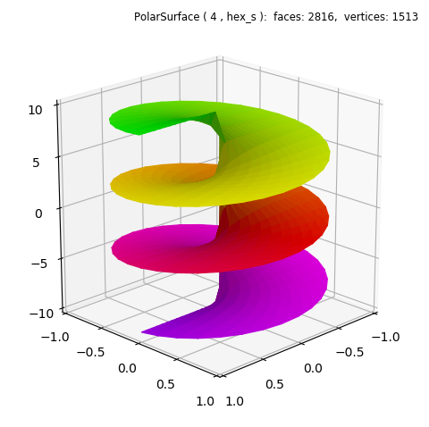

Sliced Polar Surface¶
The function in this example is not cyclic with θ, e.g. f( θ=0 ) ≠ f( θ=2π ). Therefore, a PolarSurface object was used with a basetype hex_s which is not continuous at 0 and 2π. Evaluation was made in the domain of -3π ≤ θ ≤ 3π, as seen in the highlighted lines with k=3.
import numpy as np
from matplotlib import pyplot as plt
from matplotlib.ticker import LinearLocator
import s3dlib.surface as s3d
import s3dlib.cmap_utilities as cmu
#.. Sliced Polar Surface
# 1. Define function to examine .....................................
def screwfunc(rtz, k) :
r,t,z = rtz
T = k*t
Z = T - k*np.pi
return r,T,Z
# 2. Setup and map surfaces .........................................
rez = 4
purple2green = cmu.hue_cmap(lowHue="blueviolet", highHue='+g')
screw = s3d.PolarSurface(rez, basetype='hex_s', antialiased=True)
screw.map_geom_from_op( lambda rtz : screwfunc(rtz, 3) )
screw.map_cmap_from_op( lambda rtz : rtz[2], purple2green ).shade(direction=[0,0,1])
# 3. Construct figures, add surface, plot ...........................
fig = plt.figure(figsize=plt.figaspect(1))
fig.text(0.975,0.975,str(screw), ha='right', va='top', fontsize='smaller', multialignment='right')
ax = plt.axes(projection='3d')
ax.set(xlim=(-1,1), ylim=(-1,1), zlim=(-10,10) )
ax.xaxis.set_major_locator(LinearLocator(5))
ax.yaxis.set_major_locator(LinearLocator(5))
ax.zaxis.set_major_locator(LinearLocator(5))
ax.view_init(20, 45)
ax.add_collection3d(screw)
fig.tight_layout()
plt.show()